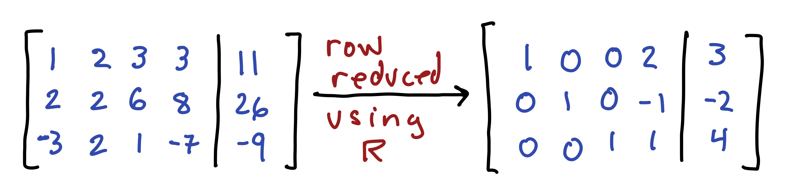

Section 2 Problem Set 2
- Due: Friday September 17 by 11:59PM CST.
- Upload your solutions to Moodle in a PDF.
- Please feel free to use RStudio for all row reductions.
- In problems where you use RStudio for row reduction and are not asked to turn in an R markdown file, you can write something like this:

## Loading required package: pracmaThe Problem Set covers sections 1.3 (vector equations), 1.4 (matrix equations), and 1.5 (parametric solutions and the relationship between homogeneous and nonhomogeneous equations).
2.1 Vector Equation
Decide if the vectors \(\mathsf{b}\) and \(\mathsf{d}\) are in the span of the vectors \(\mathsf{v}_1\), \(\mathsf{v}_2\), \(\mathsf{v}_3\), \(\mathsf{v}_4\). If the vector is in the span, then give a linear combination of the vectors that does it. If it is not in the span, demonstrate that it is not with an appropriate matrix computation. \[ \mathsf{v}_1 = \begin{bmatrix} 2 \\ 2 \\ 1 \\ 1 \end{bmatrix},\quad \mathsf{v}_2 = \begin{bmatrix} -1 \\ -1 \\ -1 \\ 3 \end{bmatrix},\quad \mathsf{v}_3 = \begin{bmatrix} -4 \\ -4 \\ -3 \\ 5 \end{bmatrix},\quad \mathsf{v}_4 = \begin{bmatrix} -1 \\ 2 \\ -2 \\ 1 \end{bmatrix}. \] \[ \mathsf{b} = \begin{bmatrix} 36 \\ 48 \\ 19 \\ -25 \end{bmatrix},\qquad \mathsf{d} = \begin{bmatrix} 30 \\ 24 \\ 10 \\ 10 \end{bmatrix}. \] Here are the vectors for you:
v1 = c(2,2,1,1)
v2 = c(-1,-1,-1,3)
v3 = c(-4,-4,-3,5)
v4 = c(-1,2,-2,1)
b = c(36,48,19,-25)
d = c(30,24,10,10)2.2 Matrix Equation
Solve the matrix equation, A x = b, below and give your answer in parametric vector form (we will disccuss parametric form on Monday Sept 13). Describe the solution set geometrically: e.g., “a line in \(\mathbb{R}^4\)” or “a plane in \(\mathbb{R}^6\).” \[ \begin{bmatrix} 1 & 1 & -1 & -1 & 2 \\ 1 & 0 & -2 & 1 & 1 \\ -2 & 1 & 5 & 1 & -6 \\ -3 & 0 & 6 & 2 & -8 \\ 0 & 1 & 1 & 2 & -3 \\ 1 & 0 & -2 & -1 & 3 \\ \end{bmatrix} \begin{bmatrix} x_1 \\ x_2 \\ x_3 \\ x_4 \\ x_5 \end{bmatrix} = \begin{bmatrix} 1 \\ 3 \\ 2\\ 1 \\ 6 \\ -1 \end{bmatrix} \] Here is the matrix A and the vector b for you:
A = cbind(c(1,1,-2,-3,0,1),c(1,0,1,0,1,0),c(-1,-2,5,6,1,-2),c(-1,1,1,2,2,-1),c(2,1,-6,-8,-3,3))
b = c(1,3,2,1,6,-1)2.3 RREF for a linear system
Here is the reduced row echelon form of a matrix \(\mathsf{A}\) (you are not given the matrix \(\mathsf{A}\)). \[ \mathsf{A} \longrightarrow \left[ \begin{array}{cccc} 1 & 0 & 0 & 5 & -2\\ 0 & 1 & 0 & -7 & 4\\ 0 & 0 & 1 & 2 & -3\\ 0 & 0 & 0 & 0 & 0\\ \end{array} \right] \]
Give the solution to the homogeneous matrix equation \(A x = \mathbf{0}\) in parametric vector form and describe the geometry of the solution. For example, you answer should be something like: “it is a plane in \(\mathbb{R}^3\)” or “it is a line in \(\mathbb{R}^7\)” or “it is a point in \(\mathbb{R}^4\).”
Suppose that we also know that \(\mathsf{A}\begin{bmatrix} 4 \\ 1 \\ 3 \\ 2 \\ 1 \end{bmatrix} = \begin{bmatrix} 5 \\ 1 \\ 2 \\3 \end{bmatrix}\). Then give the general solution to \(\mathsf{A} \mathsf{x}= \begin{bmatrix} 5 \\ 1 \\ 2 \\ 3 \end{bmatrix}\) in parametric form.
2.4 A square matrix
Suppose that \(A\) is a \(5\times 5\) matrix and \(\mathsf{b}\) is a vector in \(\mathbb{R}^5\) with the property that \(A\mathsf{x}=\mathsf{b}\) has a unique solution. Explain why the columns of \(A\) must span \(\mathbb{R}^5\). Use the reduced row echelon form of \(A\) in your explanation.
2.5 Combining solutions to \(A \mathsf{x} = \mathsf{b}\)
Suppose that \(\mathsf{x}_1\) and \(\mathsf{x}_2\) are solutions to \(\mathsf{A} \mathsf{x} = \mathsf{b}\) (where \(\mathsf{b} \not= \mathsf{0}\)).
- Decide if any of the following are also solutions to \(\mathsf{A} \mathsf{x} = \mathsf{b}\). Justify your answers.
- \(\mathsf{x}_1+ \mathsf{x}_2\)
- \(\mathsf{x}_1 - \mathsf{x}_2\)
- \(\frac{1}{2} ( \mathsf{x}_1 + \mathsf{x}_2)\)
- \(\frac{5}{2} \mathsf{x}_1 - \frac{3}{2} \mathsf{x}_2\).
- Under what conditions on \(c\) and \(d\) is the linear combination \(\mathsf{x} = c \mathsf{x}_1 + d \mathsf{x}_2\) a solution to \(\mathsf{A} \mathsf{x} = \mathsf{b}\)? Justify your answer.
- Let \(\mathsf{u}\) be the vector that points to \(1/3\) of the way from the tip of \(\mathsf{v}\) to the tip of \(\mathsf{w}\) as depicted below.
- Write \(\mathsf{u}\) as a linear combination of \(\mathsf{v}\) and \(\mathsf{w}\) (hint: think about \(\mathsf{w} - \mathsf{v}\))
- If \(\mathsf{v}\) and \(\mathsf{w}\) are solutions to \(A x = \mathsf{b}\) then show that \(\mathsf{u}\) is also a solution to \(A \mathsf{x} = \mathsf{b}\).
2.6 A Balanced Diet
An athlete wants to consume a daily diet of 200 grams of carbohydrates, 60 grams of fats and 160 grams of proteins. Here are some of their favorite foods.
| food | carbs | fats | proteins |
|---|---|---|---|
| almonds | 3 | 8 | 5 |
| avocado | 15 | 31 | 4 |
| beans | 20 | 1 | 8 |
| bread | 12 | 1 | 2 |
| cheese | 1 | 5 | 3 |
| chicken | 0 | 13 | 50 |
| egg | 1 | 5 | 6 |
| milk | 12 | 8 | 8 |
| zucchini | 6 | 0 | 2 |
Explain why they cannot achieve their daily goal by eating only almonds, milk and zucchini.Use the word span in your answer.
Explain why they cannot achieve their daily goal by eating only almonds, beans and cheese.
Find a valid one-day diet consisting of almonds, chicken, and zucchini.